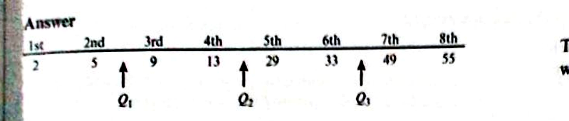
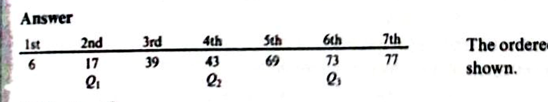

Ungrouped data. The two cases that split every exam question: even n and odd n.
Cambridge 9709 Paper 5 · Topic 5.1 · Ch 3 §3.1–3.2
Range = largest value − smallest value.
Simple, but easily thrown off by a single outlier.
Interquartile range (IQR) = $Q_3 - Q_1$ — the spread of the middle 50% only, so it ignores extreme values.
Split the ordered data into two halves. $Q_1$ = median of lower half; $Q_3$ = median of upper half.

Data: 2, 5, 9, 13, 29, 33, 49, 55 ($n=8$)
$Q_1 = \dfrac{5+9}{2} = 7$, $Q_3 = \dfrac{33+49}{2} = 41$
Find the median, discard it, then split the remaining values into two halves.

Ordered: 6, 17, 39, 43, 69, 73, 77 ($n=7$)
Median $=43$ (discard). Lower half: 6, 17, 39 → $Q_1=17$. Upper half: 69, 73, 77 → $Q_3=73$.
Find the range and the interquartile range of the following set of values: 5, 8, 13, 17, 22, 25, 30. [Exercise 3A Q1a]
Hint: $n = 7$ — which case is this?
Find the range and the interquartile range of the following set of twelve values: 113, 97, 36, 81, 49, 41, 20, 66, 28, 32, 17, 107. [Exercise 3A Q1d]
Hint: order first. $n = 12$ — which case?